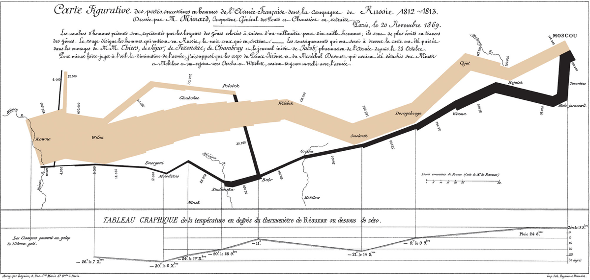
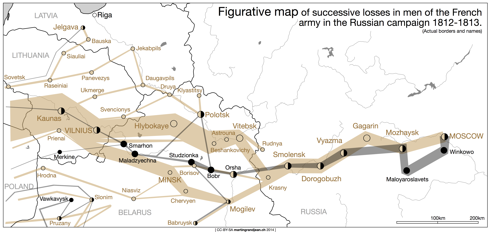
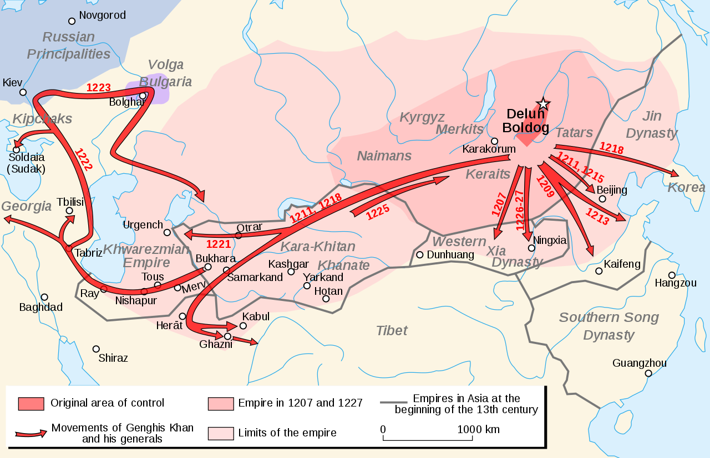

러시아 침공을 위한 병참 준비 - 무엇이 문제였을까 ? (3편)
게시: 2019-08-12T06:30:35+09:00
나폴레옹의 기존 작전들의 특징을 동물에 비유하자면 딱 생각나는 것이 바로 문어입니다. 그는 휘하 군단들을 문어발처럼 넓게 펼친채 전진하다가, 적 주력부대의 존재가 그 촉수 중 하나에 걸려들면 정말 먹잇감을 건드린 문어처럼 다른 촉수들이 벼락같이 그 방향으로 달려들었습니다. 이렇게 표현하니 뭔가 멋있어 보이지만, 이런 작전 형태에는 본질적인 약점이 있었습니다. 분산된 채 전진하다가 강력한 적을 만날 경우 각개격파 당하기 딱 좋았던 것입니다. 이런 작전을 구사하기 위해서는 넓게 펼쳐진 촉수들이 정말 재빨리 움츠러들 수 있어야 했습니다. 즉, 각 군단들의 기동력이 매우 좋아야 했지요. 원래 나폴레옹 군단들의 행군 속도는 유럽 최고 수준이었습니다만, 그런 그들에게도 이런 작전은 힘에 겨운 것이었습니다. 덕분에 나폴레옹이 대승을 거둔 아우스테를리츠나 예나 등의 전투에서도 주요 부대들이 밤새 행군하여 전투 시작 직전에야 전투 현장에 간신히 도착하는 경우가 꽤 많았습니다. 나폴레옹이 그런 약점을 무릅쓰면서 촉수를 펼친 문어처럼 휘하 병력을 넓게 전개한 채 전진한 것에는 이유가 있었습니다. 첫번째 이유는 정찰기가 없는 시대에는 적 주력 부대의 위치를 포착하기가 어렵기 때문이았지요. 그러나 더 중요한 이유는 바로 식량이었습니다. 나폴레옹처럼 식량을 현지조달에 의존하는 것도 아무나 쉽게 흉내낼 수 있는 전법이 아니었습니다. 나폴레옹이 주로 활약했던 독일이나 이탈리아가 비교적 농업 생산성이 좋은 동네라서 식량이 풍부했다고 해도, 10만 대군이 한꺼번에 밀려들면 어지간한 동네는 식량이 순식간에 바닥을 드러낼 수 밖에 없었습니다. 만약 바로 전날 우디노의 군단이 한 동네의 빵과 밀가루를 탈탈 털어먹었는데, 바로 그 다음날 빅토르의 군단이 또 밀어닥쳐서 먹을 것이 없나 뒤진다면, 그건 단순히 그 동네 주민들만의 분노로 끝나지 않고 빅토르 군단의 굶주림으로 이어질 것입니다. 따라서 나폴레옹은 각 부대가 거쳐가는 주요 마을과 도시로부터 비교적 손쉽게 식량을 얻을 수 있도록 군단별로 세심하게 진격로를 설정해야 했습니다. 그런데 1812년 여름, 러시아 침공에 나선 나폴레옹의 군단들은 예전과는 달리 상당히 뭉쳐진 모습으로 같은 길을 꼬리에 꼬리를 물고 이동하는 모습을 보여주었습니다. 대부분의 주요 군단들은 나폴레옹과 함께 중앙군을 형성한 채 무리를 지어 진격했습니다. 그 외에는 단일 군단으로는 가장 컸던 다부(Davout)의 제1 군단 약 7만2천과, 나폴레옹의 동생 제롬(Jérôme)이 이끈 베스트팔렌, 폴란드, 작센 출신의 병사들로 이루어진 4개 보조 군단 총 7만9천이 서로 다른 길로 남쪽 민스크(Minsk)를 향했습니다. 그나마 이들도 결국은 스몰렌스크(Smolensk)부터는 나폴레옹의 중앙군과 합류하게 됩니다. 그 외에는 주로 프로이센 및 바이에른 병사들로 이루어진 막도날(Macdonald)의 제10 군단 3만2천이 좌측 날개를 맡았고, 슈바르첸베르크(Schwarzenberg)가 이끄는 오스트리아군 3만 정도가 우측 날개를 맡았습니다. 나폴레옹이 전과 달리 이렇게 밀집된 형태로 행군하게 된 것은 크게 2가지 이유였습니다. 하나는 상대해야 할 적의 주력이 바클레이 드 톨리(Barclay de Tolly)의 제1 서부군과 바그라티온(Bagration)의 제2 서부군으로 크게 양분되어 있었기 때문에 그에 대응하기 위한 것이었습니다. 그리고 두번째 이유는 이미 나폴레옹이 파악하고 있던 대로, 어차피 러시아 평원에서는 아무 식량도 기대하지 않았기 때문이었지요. 그에 따라 나폴레옹은 병사들이 먹을 식량을 모두 독일과 폴란드에서 마차로 실어올 준비를 해놓았습니다.

(정말 유명한 나폴레옹의 러시아 원정군 궤멸 과정을 시각화시킨 미니아르의 도표 원본입니다. 이 도표는 1896년에 처음 나온 것이지요. 미니아르는 프랑스의 토목 기사로서 현대적인 인포그래픽스의 선구자라고 할 수 있습니다. 저기에 쓰인 프랑스어를 번역하면 아래와 같습니다. 1812~1813년의 러시아 원정에서 프랑스군 병력의 연속적인 손실에 대한 산술적 지도 1869년 11월 20일, 파리, 교량 및 도로 감사관(은퇴)인 M. 미니아르(M. Miniard)가 작성. 병력 수는 색칠된 구역선의 폭, 즉 10만명당 1mm로 표시했으며, 구역선 가로질러서도 명기했다. 붉은 색은 러시아에 진입한 병력 수를 뜻하고 검은 색은 빠져나온 수를 뜻한다. 이 지도를 그리는데 사용된 정보는 M. M. Thiers, de Ségur, de Fezensac, de Chambray 및 10월 28일부터 프랑스군 약제사로 일한 야콥(Jacob)의 미출간 일지 등에서 얻었다. 원정군의 궤멸 과정을 눈으로 좀더 잘 파악하기 위해, 제롬(Jérôme) 대공과 다부(Davout) 원수의 병력은 실제로는 민스크(Minsk)와 모길레프(Mogilev)에서 갈라졌다가 오르샤(Orsha)와 비텝스크(Vitebsk) 인근에서 재합류했지만, 항상 주력 부대와 함께 행군한 것으로 가정했다.)

(위 지도는 미니아르의 도표와 실제 지도를 합성한 것입니다. 미니아르의 도표도 실제 나폴레옹 원정군의 위도 경도를 반영하여 만든 것이므로 잘 들어맞는 편입니다.)
그러나 이미 전편에서 설명드렸다시피, 나폴레옹의 수송 계획은 기술의 한계와 열악한 도로 사정 때문에 처음부터 빗나갈 운명이었습니다. 프랑스군의 수송 엔진은 말이었으므로 그 연료는 사료였는데, 나폴레옹은 도저히 계산이 나오지 않는 말 사료 문제에 대해서는 반쯤 포기한 상태였습니다. 나폴레옹도 러시아의 겨울이 무섭다는 사실은 잘 알고 있었으므로 겨울이 오기 전에 여유있게 작전을 하려면 봄부터 러시아 침공을 시작해야 했습니다. 그런데도 굳이 6월 하순까지 기다렸던 것은 사람이 먹을 곡물 뿐만 아니라 말이 뜯어먹을 풀이 무성하게 자라기를 기다렸기 때문이었습니다. 하지만 콩이나 곡물도 아니고 그냥 풀이라면 말은 깜짝 놀랄 만큼의 양을 뜯어먹어야 했습니다. 프랑스군 부대가 지나간 자리는 정말 메뚜기떼가 지나간 흔적처럼, 사람이 먹을 것은 물론 말이 먹을 풀도 금세 다 없어져 버렸습니다. 그리고 그 뒤를 따라오던 후속 프랑스군의 사람과 말은 정말 그냥 굶어야 했습니다. 그렇다고 나폴레옹이 예전처럼 병력의 진격로를 좀더 넓게 분산할 수도 없었습니다. 그렇쟎아도 열악한 도로 사정으로 치중부대에 의한 보급이 어려웠는데, 그렇게 병력을 분산시키면 보급은 더욱 어려워질 것이 뻔했습니다. 게다가 집결된 적의 주력 야전군을 바싹 추격하는 마당에 병력을 분산하는 것은 너무 위험한 일이었습니다. 생각해보면 나폴레옹과 히틀러가 실패했던 러시아 정복을 너무나 간단히 해낸 사람들이 있었습니다. 바로 바투가 이끈 몽골군이었지요. 믿을 만한 상세한 기록은 부족하지만 당시 몽골군은 대략 4~5만의 순수 기병으로 러시아 전역을 평정했습니다. 이들은 나폴레옹처럼 마차를 주요 운송 수단으로 이용하지 않았고, 식량은 함께 몰고다니는 가축에 의존했습니다. 원정군 전원이 유목민 출신 기병이다보니 넓은 지역에 걸쳐 가축들과 말에게 풀을 뜯게 하면서 장기간 작전을 펼치는 것이 별로 어렵지 않았습니다. 이건 나폴레옹이 흉내낼 수 없는 일이었습니다. 하지만 그래도 흉내낼 수 있는 부분이 있긴 했습니다. 바로 소수 정예로 러시아 원정길에 나서는 것이었습니다.

(몽골군이 무서운 이유는 그 활이 강력함보다도 기동력과 보급에 있습니다. 세상에 어떤 군대가 저런 활동량을 따라할 수 있겠습니까 ?)
만약 나폴레옹이 병력의 수를 확 줄여서 러시아 침공을 개시했다면 어땠을까요 ? 나폴레옹의 그랑다르메(Grande Armee)는 1805년 아우스테를리츠 전투 이후 유럽 최강의 무적 군대로 이름을 날렸지만 어쩔 수 없이 사상자가 발생하면서 조금씩 질적으로 하향되어갔습니다. 특히 1807년 2월 아일라우 전투에서 엄청난 사상자를 낸 이후로는 그 질적 하향세가 매우 뚜렸했습니다. 1809년 바그람 전투에서는 패배한 오스트리아군 못지 않게 프랑스군의 피해도 엄청나게 컸는데 이것은 오스트리아군의 질적 향상 외에 프랑스군의 질적 저하도 원인이 되었습니다. 오스트리아군의 공격을 받고 휘하 병력의 대부분이 어린 신병으로 이루어져 있던 부대 전체가 겁에 질려 어쩔 줄을 모르자 분개한 마세나가 '저 풋내기들에게 브랜디를 잔뜩 마시게 하고 군기를 보여줘라' 라고 외친 것은 유명한 일입니다. 겁에 질렸던 신병들이 마세나의 그런 지휘에 결국 혼란을 수습하고 오스트리아군에게 반격을 가해 결국 승리한 것도 정말 대단한 일이었지요. 이제 40만이 넘는 대군이 된 러시아 침공군은 과연 어떤 병사들로 이루어졌을까요 ? 상당수는 다년간의 경험을 쌓은 노련한 병사들이었지만, 이렇게 많은 대군을 끌어모으다보니 아무래도 신병들의 비율도 매우 높았습니다. 게다가 프랑스 내의 인적 자원도 많이 고갈되어, 키나 건강 상태, 나이 등에서 1805년이라면 탈락시켰을 젊은이들까지도 마구 입대시켜 충당한 신병들에 대해 많은 지휘관들이 우려를 나타냈습니다. 무엇보다 이 40만 대군 중에는 많은 수의 외국인들이 섞여 있었는데, 이 중에는 폴란드인처럼 나폴레옹에게 충성하는 병사들도 있었지만 프로이센인들처럼 죽지 못해 끌려나온 병사들도 많았습니다. 같은 이탈리아인들 중에서도 북부인 이탈리아 왕국 병사들은 상당히 우수한 자원으로 평가받았지만 뮈라의 신민들인 나폴리인들은 프랑스 지휘관들으로부터 '애초에 군인으로서는 아무짝에도 쓸모가 없다'라는 악평을 받았습니다. 이렇게 먹을 것과 마실 것만 축낼 뿐 실제 전투에서는 별 도움이 안 되는 병력은 제외시키고 알짜배기 정예병력만 투입했다면 보급 문제를 해결할 수 있지 않았을까요 ? 결론부터 이야기하자면 안될 일이었습니다. 일단 바투가 상대해야 했던 러시아는 그야말로 동구의 후진국으로서 인구 8~9백만에 무장 병력도 5만 정도에 불과했습니다. 알고보면 바투도 소수 정예로 다수의 러시아군을 무찌른 것은 아니었던 것이지요. 그러나 나폴레옹 시대의 러시아는 인구 4천만이 넘고 20만이 넘는 야전군을 거느린 강대국이었습니다. 바투의 몽골군은 전원이 경기병이라는 특색이라도 있었지만, 나폴레옹의 그랑다르메는 남들 다 쓰는 머스켓 소총과 그리보발식 야포를 사용하는 평범한 군대였습니다. 이런 상황에서는 총검의 숫자가 승패를 판가름짓는 가장 중요한 요소였습니다. 실제로 나폴레옹이 과거에 거두었던 승리는 거의 언제나 전투 현장에 더 많은 병력을 모을 수 있었기 때문에 가능한 것이었지 기기묘묘한 전법을 사용하는 소수 정예로 얻어낸 것이 아니었습니다. 한마디로 소수 정예에 의한 결전은 나폴레옹의 스타일이 아니었습니다. 오히려 나폴레옹은 이번 전쟁에서 승리하기 위해서는 압도적인 병력을 동원하여 러시아의 기를 죽여버려야 한다고 생각했습니다. 나폴레옹은 애초에 러시아와 싸우고 싶어하지 않았습니다. 러시아처럼 광활한 영토를 가진 나라는 정복하는 것도 어려웠지만, 그런 황량한 나라를 정복해봐야 딱히 얻을 것도 없었습니다. 나폴레옹이 러시아로부터 원하는 것은 딱 하나, 대륙 봉쇄령에 다시 참여하여 영국 상품에 대해 문을 닫아걸라는 것이었지요. 그런 목적을 위해서는 굳이 모스크바를 점령할 필요도 없었고 러시아 야전군과 피투성이 살육전을 벌여 쌍방간에 수만 명의 사상자를 낼 이유도 없었습니다. 그냥 알렉산드르가 나폴레옹에게 겁을 먹고 협상을 하도록 강요만 하면 되는 것이었지요. 그러기 위해서는 러시아가 상황을 오판하지 않도록 그야말로 압도적인 전력을 한꺼번에 동원하여 저항할 생각조차 하지 못하게 만드는 것이 가장 좋았습니다. 또 그러기 위해서는 훈련이 얼마나 되어있건 충성심이 있건 없건 동원가능한 병력은 다 동원하는 것이 옳은 일이었습니다. 그래서 40만이 넘는 대군을 동원한 것이었지요. 나폴레옹은 그런 대군을 먹여살리기에는 자신의 보급망이 불충분하다는 것을 알고 있었지만, 원정에 대해서는 낙관적인 생각을 버리지 않았습니다. 개전 이후 3주 안에 러시아군을 크게 꺾어놓고 평화 협상을 하게 될 것이라고 확신하고 있었거든요. 그래서 원정군에게는 24일치의 식량을 지급하여 3일치는 병사들이 몸에 지니고 나머지 21일치는 마차에 싣고 가도록 하되, 네만 강을 건너기 전에는 절대 그 식량을 먹지 못하도록 했습니다. 하지만 나폴레옹은 알렉산드르와 러시아인들을 너무 얕잡아 본 것이었습니다.
게다가 나폴레옹의 병참 준비에는 그 중요성에 비해 너무나 완전히 배제되어 있던 것이 있습니다. 그리고 나폴레옹은 그 대가를 톡톡히 치르게 됩니다. 그게 무엇이었을까요 ?
Source : 1812 Napoleon's Fatal March on Moscow by Adam Zamoyski http://www.indiana.edu/~psource/PDF/Archive%20Articles/Spring2011/LynchBennettArticle.pdf https://pdfs.semanticscholar.org/1d6e/96fd09126a40dca06ef01e8c9b13785e8379.pdf https://warandsecurity.com/2013/02/11/why-napoleons-1812-russian-campaign-failed/ https://en.wikipedia.org/wiki/French_invasion_of_Russia https://www.stolenhistory.org/threads/1812-french-invasion-of-russia-vs-logistics.1167/ https://www.bbc.co.uk/news/magazine-16929522 http://www.historyofwar.org/Maps/maps_russia_1812_to_moscow.html https://www.reddit.com/r/dataisbeautiful/comments/26jy3t/a_rework_of_minards_map_the_first_data/ https://www.awesomestories.com/asset/view/A-Map-of-the-Great-Retreat-from-Russia//1 http://www.historyhome.co.uk/c-eight/france/moscow.htm https://en.wikipedia.org/wiki/Charles_Joseph_Minard https://patrimoine.enpc.fr/document/ENPC01_Fol_10975?image=54#bibnum Napoleon's Train Troops: 1800-1815. Paul Lindsay Dawson